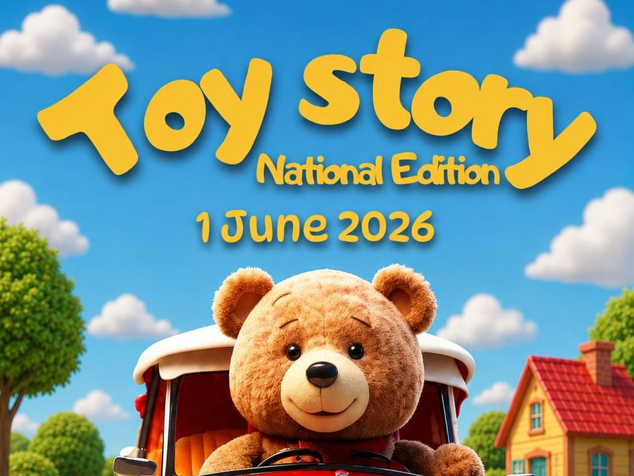

Proiect național JCI România, implementat la Brașov
Colectăm jucării care pot fi refolosite și le recondiționăm, iar rezultatul campaniei ajunge la copiii din secțiile de oncologie și la familii vulnerabile.